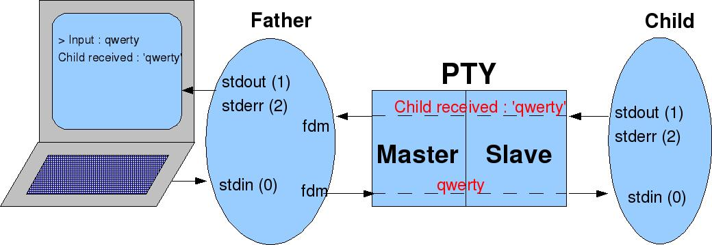

Utilisation des pseudo-terminaux (pty) pour piloter les programmes interactifs
|
|
| |
|
|
Bien que de moins en moins utilisées, les applications intéractives en mode ligne de commande interagissant avec un opérateur via un terminal sur port série, sont encore légions. Notamment dans le monde Linux embarqué où les ressources graphiques sont superflues ou d'un coût trop élevé. Parmi ces applications, on peut en citer quelques unes des plus connues:
- bash : Le shell par défaut de Linux
- bc : La calculatrice
- ftp : Utilitaire de transfert de fichier
- telnet
: Terminal distant
Il est possible de tirer bénéfice de ces utilitaires dans des scripts shell afin d'automatiser certaines tâches comme les tests ou les opérations de maintenance et d'administration système. Par exemple, on pourrait lancer un script qui crée une session telnet sur une machine distante afin de déclencher certaines opérations. Mais cela n'est pas aussi simple car un processus interactif, nécessitant l'intervention d'un opérateur pour fonctionner, se prête à priori mal à une automatisation de son déclenchement.
Cet article se propose donc de présenter une solution à l'automatisation des programmes interactifs à travers la notion de pseudo-terminal.
Avant proposUn programme Linux lorsqu'il est chargé en mémoire pour être exécuté, devient un processus qui est attaché au terminal courant. Par défaut, l'entrée standard (stdin) provient du clavier tandis que les sorties normales et en erreur standards (stdout et stderr) sont redirigées sur l'écran (cf. figure 1).
Figure 1 : Entrée et sorties standard d'un processus Linux
Linux offre la notion de redirection des entrées et sorties de sorte à permettre à un processus de lire ses données d'entrée à partir d'une autre source que le clavier du terminal courant et d'afficher ses données de sortie sur une autre destination que l'écran du terminal courant. La puissance de ce mécanisme réside dans le fait que les redirections sont complètement transparentes: le processus lit son entrée standard et affiche sur ses sorties standards sans connaître la nature des périphériques qui se cachent derrière. En d'autres termes, un programme peut être lancé sans modification pour lire tantôt le clavier, tantôt le contenu d'un fichier, tantôt la sortie d'un autre programme (via le mécanisme de pipe). Il en va de même pour ses sorties.
Considérons le programme simple suivant appelé mylogin, qui saisit un nom de login et un mot de passe :
|
#include <stdio.h> int
main(void) //
Par défaut stdin, stdout et stderr sont ouverts
fprintf(stdout,
"Mot de passe : "); fprintf(stdout, "La saisie est :\n%s%s\n", nom_de_login, mot_de_passe); return
0; |
|
$
./mylogin |
|
$
./mylogin > output.txt |
Un programme intéractif aussi simple que mylogin peut être automatisé. Nous entendons par automatisation, le remplacement d'un opérateur humain par un programme tel qu'un script shell. Considérons par exemple, le fichier input.txt dans lequel on a mis le nom de login et le mot de passe attendus par mylogin :
|
$
cat input.txt |
|
$
./mylogin < input.txt |
|
#include <stdio.h> int
main(void) // Par défaut stdin, stdout et stderr sont ouverts
fprintf(stdout,
"login : "); //
Nettoyage de l'entrée standard
fprintf(stdout,
"Mot de passe : ");
fprintf(stdout,
"La saisie est :\n%s%s\n", nom_de_login, mot_de_passe); return
0; |
|
$ ./mylogin login : toto Mot de passe : foo La saisie est : toto foo |
|
$
./mylogin < input.txt |
A travers cet exemple simple, est mis en avant un des nombreux problèmes que l'on peut rencontrer lors du lancement automatique des programmes intéractifs. En effet, en plus de la désynchronisation qu'il peut y avoir entre les données en entrée et le programme, ce dernier peut aussi effectuer des opérations de reconfiguration du terminal pour se mettre en mode ligne ou canonique ou tout simplement pour désactiver l'écho des caractères. Si, l'entrée ou les sorties standards ne sont pas des terminaux mais des fichiers par exemple, alors ces opérations vont échouer et déclencher des erreurs dans le programme.
La notion de pseudo-terminal est une solution à ce problème comme nous allons le voir dans la suite.
Un pseudo-terminal (communément appelé pty) est une paire de périphériques virtuels en mode caractère : l'un est esclave et l'autre est maître. Un canal bidirectionnel relie ces deux entités. Toute donnée écrite du côté maître se retrouve en sortie du côté esclave. Inversement, toute donnée écrite du côté esclave, se retrouve en sortie du côté maître comme indiqué en figure 2.
Figure 2 : Vue générale d'un pseudo-terminal
La partie esclave se comporte exactement comme un terminal classique dans le sens où tout processus peut l'ouvrir pour en faire son entrée et sa sortie standard. Certains traitements tel que l'écho, le remplacement des carriage return par des line feed ou autre peuvent être réalisés sur les données entrant ou sortant sur le pty esclave.
La partie maître n'est quant à elle pas un terminal mais permet de faire des opérations de lecture de données provenant de la partie esclave et d'écriture de données à destination de la partie esclave.
Dans le monde Unix en général, il existe plusieurs implémentations des pseudo-terminaux. Il y a la version BSD et la version System V. Le monde Linux a retenu la version System V sous l'appellation « Unix 98 pty ». C'est cette dernière qui est recommandée désormais et qui fera donc l'objet de la suite de cet article.
|
#define _XOPEN_SOURCE 600 #include
<stdlib.h> int
main(void) //
Affichage de /dev/pts fdm
= posix_openpt(O_RDWR); rc
= grantpt(fdm); rc
= unlockpt(fdm); //
Affichage des changements dans /dev/pts printf("Le pseudo-terminal esclave a pour nom : %s\n", ptsname(fdm)); return
0; |
|
$
./mypty |
Les pseudo-terminaux sont essentiellement utilisés pour faire croire à un processus qu'il est en interface avec un terminal classique alors qu'il est en communication avec un ou plusieurs processus.
Pour mettre en évidence les fonctionnalités d'un pseudo-terminal, on peut modifier le programme mypty en mypty2 comme suit :
|
#define
_XOPEN_SOURCE 600 int
main(void) fdm
= posix_openpt(O_RDWR); rc
= grantpt(fdm); rc
= unlockpt(fdm); //
Ouverture du PTY esclave //
Création d'un processus fils
//
Fermeture de la partie esclave du PTY
while
(1) rc = read(0, input, sizeof(input));
if
(rc > 0)
//
Lecture de la reponse du fils dans le PTY
if
(rc > 0)
fprintf(stderr,
"%s", input); // Code du processus fils
//
Fermeture de la partie maitre du PTY
//
Sauvegarde des parametre par defaut du PTY esclave
//
Positionnement du PTY esclave en mode RAW
cfmakeraw
(&new_term_settings);
//
Le cote esclave du PTY devient l'entree et les sorties standards du
fils
while
(1)
printf("Le
fils a recu : '%s'\n", input); return
0; |
|
$
./mypty2 |
La figure 3 explique le fonctionnement de mypty2 lorsque l'opérateur saisit la chaîne de caractères « qwerty » :
Figure 3 : Fonctionnement de mypty2

Côté
processus
fils,
on
remarquera
la
configuration
du
pty
esclave via les appels à cfmakeraw()
et tcsetattr()
de sorte à passer en mode raw (brut en français)
pour désactiver les opérations telles que l'écho.
On
peut rendre plus
générique la modification faite dans mypty2
pour donner la possibilité d'exécuter n'importe quel
programme derrière le pty.
Dans
mypty3,
le
processus
père
envoie
tout
ce
qui
vient
de
son
entrée
standard
sur le pty
maître et tout ce qui vient du pty
maître sur sa sortie standard. Il se conduit simplement comme
un relayeur de données. Le processus fils effectue les
mêmes
opérations que précédemment mais se
généralise
pour éxécuter un programme interactif quelconque
avec ses paramètres passés
en arguments. Nous noterons les appels à setsid()
et ioctl(TIOCSCTTY)
pour faire en sorte que le pty
esclave soit le terminal de contrôle du programme
exécuté. On notera aussi la fermeture du descripteur de
fichier fds
qui n'est plus utile après les appels à dup().
|
#define
_XOPEN_SOURCE 600 int
main(int ac, char *av[]) //
Contrôle des arguments fdm
= posix_openpt(O_RDWR); rc
= grantpt(fdm); rc
= unlockpt(fdm); //
Ouverture du PTY esclave //
Création d'un processus fils // Code du processus pere
//
Fermeture de la partie esclave du PTY
while
(1)
rc
= select(fdm + 1, &fd_in, NULL, NULL, NULL);
default
:
//
S'il y a des donnees sur le PTY maitre // Code du processus fils
//
Fermeture de la partie maitre du PTY
//
Sauvegarde des parametre par defaut du PTY esclave
//
Positionnement du PTY esclave en mode RAW // Le cote esclave du PTY devient l'entree et les sorties standards du fils
//
Fermeture de l'entrée standard (terminal courant)
//
Fermeture de la sortie standard (terminal courant)
//
Fermeture de la sortie erreur standard (terminal courant)
//
Le PTY devient l'entree standard (0)
//
Le PTY devient la sortie standard (1)
//
Le PTY devient la sortie erreur standard (2)
//
Maintenant
le
descripteur
de
fichier
original
n'est
plus
utile
//
Comme
le
process
courant
est
un
leader
de
session,
La partie esclave
du PTY devient sont terminal de contrôle return
0; |
|
$
./mypty3 |
Il est possible de lancer un shell ou tout autre programme interactif à la place de bc. Cette technique s'appliquent à nombre de programmes célèbres tels que xterm, telnet, ssh, rlogin, rsh... Par exemple, la figure 4 décrit l'architecture de telnet.
Figure 4 : Description d'une session telnet
Pour faire le parallèle avec les programmes d'exemples précédents, le démon telnetd est le processus père dont l'entrée standard n'est pas un simple terminal mais un terminal déporté à travers un réseau où s'éxécute le client telnet. Le processus fils est un shell bash. Tout ce qui provient du client telnet à travers le réseau est transmis par telnetd sur le pseudo-terminal maître. Tout ce qui provient du shell bash à travers le pseudo-terminal, est transmis au client telnet par le réseau.
mypty3 peut être modifié pour rendre le processus père plus intelligent de sorte à lui faire interpréter un scénario avec un ensemble de commandes qui lui permettent de se synchroniser avec le processus fils. En d'autres termes, on pourrait remplacer l'opérateur humain par un script de commandes. C'est tout simplement ce qui est fait par le programme pdip que nous voyons dans la suite.
pdip est l'acronyme de « Programmed Dialogue with Interactive Programs ». En français, cela donne « Dialogue Programmé avec des Programmes Interactifs ». Ce nom provient des premières lignes du manuel du programme expect dont pdip se veut être une version extrêmement simplifiée. C'est un utilitaire qui accepte un scénario en entrée pour dialoguer avec un programme interactif. pdip est disponible en source libre sur sourceforge.
Comme expect, pdip accepte un langage de commande pour envoyer et recevoir des chaînes de caractères à un programme. Mais contrairement à expect, le langage de commande n'est pas évolué au point d'accepter des structures de contrôle de haut niveau ou des branchements. Il ne permet pas non plus de dialoguer avec plusieurs programmes en même temps ou de rendre la main à l'opérateur en cours de session.
Comme indiqué en figure 5, pdip reçoit en paramètre le chemin d'accès du programme intéractif à exécuter et pour interagir avec, il accepte un langage de commandes simples sur son entrée standard ou sous forme d'un script passé en paramètre.
Figure 5 : Vue générale du fonctionnement de pdip
La liste des commandes disponibles pouvant être interprétées par pdip est :
#
dbg niveau
Positionne
le niveau du mode mise au point a niveau. Plus le niveau,
est grand, plus vous obtenez des traces. La valeur 0 désactive le mode
mise au point.
timeout
x
recv
"w1 w2..."
send
"w1 w2..."
\a
Cloche
\b Retour arrière
\t Tabulation horizontale
\n Retour à la ligne
\v Tabulation verticale
\f Saut de page
\r Retour chariot
\" Guillemet
\\ Barre oblique inversée
\[ Echappement
\] Séparateur de groupe
\^ Caractère ^
print "w1 w2..."
affiche la chaine de caracteres w1 w2... sur la sortie standard.
sig signame
sleep
x
sh [-s] cmd par...
Execute la commande shell cmd par... (de manière synchrone si l'option [-s] est spécifiée.
exit
Utiliser pdip est d'une simplicité extrême comme on le voit ici avec le pilotage d'un client telnet qui se connecte à une machine appelée « remote » avec le nom de login « foo » et le mot de passe « bar ». Ensuite la commande ls est exécutée avant de terminer la session :
|
$
pdip --cmd=’telnet remote’ |
|
$
pdip --cmd='telnet remote' Linux
2.6.22-14-generic (remote) (pts/10) The
programs included with the Ubuntu system are free software; |
La notion de pseudo-terminal est très largement utilisé dans le monde Unix en général à travers les utilitaires les plus célèbres tels que telnet ou xterm. Cet article a présenté l'une de ses applications à travers pdip qui a pour but de piloter des programmes interactifs.
[2]
man 7 regex
[3]
Programmed Dialogues with Interactive Programs (PDIP)
[4] Utilisation des pseudo-terminaux pour piloter les programmes
interactifs - 
[5] lpty - PTY control for Lua
|
|